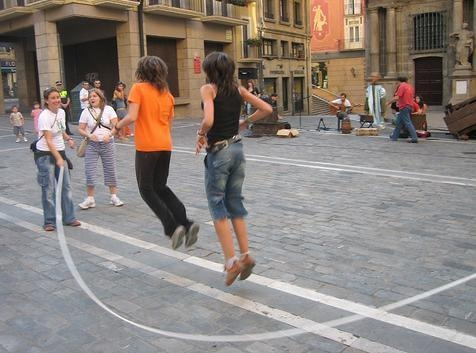

Saltar la cuerda es un juego tradicional y también un ejercicio cardiovascular completo. Consiste en girar una cuerda mientras se salta sobre ella, ya sea de forma individual o en grupo.
En la versión individual, el jugador sostiene la cuerda por los extremos, la hace girar sobre su cabeza y salta cuando la cuerda toca el suelo.
En la versión grupal, dos jugadores sostienen la cuerda por los extremos y la giran mientras los demás entran y salen saltando. Se cantan rimas tradicionales como "Doña Blanca".
El objetivo es no tropezar con la cuerda y mantenerse saltando el mayor tiempo posible o completar la canción sin fallar.
👥 Jugadores: De 1 a 10 participantes.
⏱️ Duración: Cada ronda 30 seg-2 min. Partida: 15-20 min.
🎯 Objetivo: Saltar sin tropezar el mayor tiempo posible.
🧰 Materiales: Una cuerda de saltar.
• Salta con la punta de los pies: Amortigua el impacto.
• Codos cerca del cuerpo: Gira con las muñecas.
• Mira al frente: No mires tus pies.
Pulsa SALTAR cuando la cuerda esté abajo. ¡Sigue el ritmo!